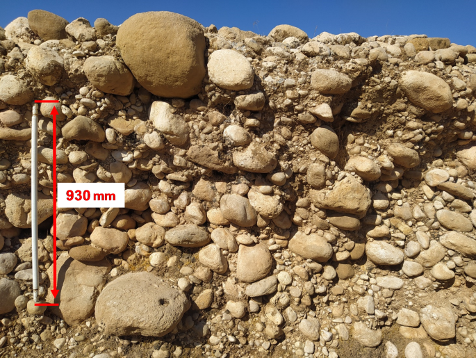
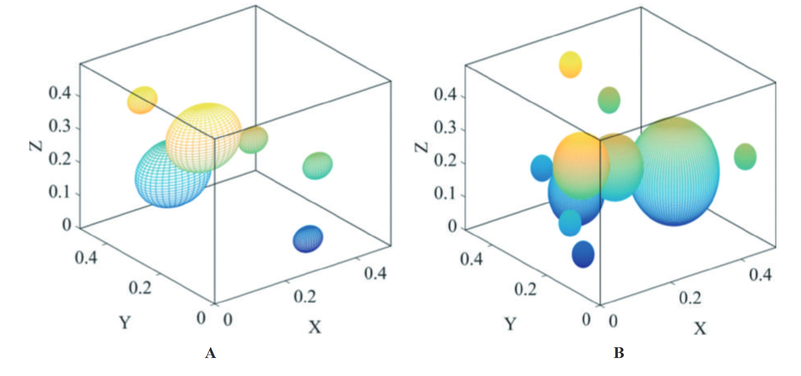
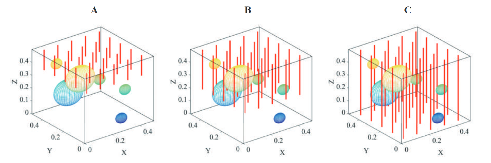
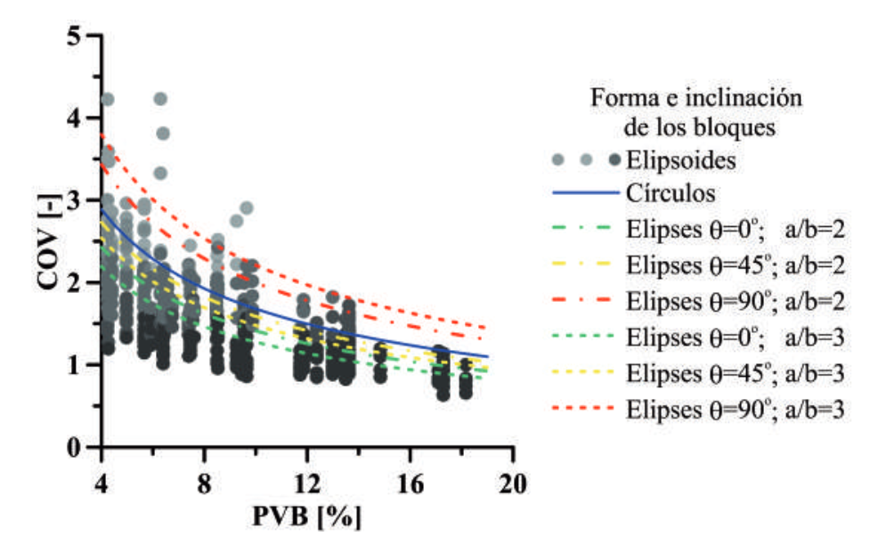

Background
BIMrocks and BIMsoils are heterogeneous geomaterials composed of relatively strong rock blocks embedded within a weaker matrix. Their mechanical behaviour depends strongly on the proportion of blocks present within the material.
However, the three-dimensional distribution of blocks cannot usually be observed directly during a conventional geotechnical investigation. Boreholes provide one-dimensional information, from which the volumetric block proportion must be estimated.
Because the blocks are randomly distributed, different boreholes can intersect very different amounts of block material. This introduces uncertainty into the estimation of the true volumetric block proportion.
Research question: How does the geometry of the blocks and the amount of borehole information influence the uncertainty in estimating their volumetric proportion?


Objective
The project aimed to quantify the uncertainty associated with estimating the volumetric block proportion from one-dimensional borehole data.
The study specifically investigated how the uncertainty changes with the amount of subsurface information and with the geometry of the embedded blocks.
- Number of boreholes and the amount of information available from the subsurface.
- Borehole length and its influence on the reliability of the estimated block proportion.
- Block geometry, including size and shape.
- Block orientation and its effect on the measurements obtained from one-dimensional sampling.
Computational modelling
A computational algorithm was developed to generate and analyse simplified BIMrock/BIMsoil configurations containing blocks embedded within a matrix.
Virtual boreholes were then used to sample the three-dimensional material along one-dimensional lines, reproducing the type of information obtained during a conventional geotechnical investigation.

From 3D structure to 1D information
The known volumetric block proportion of each simulated material was compared with the proportion estimated from virtual boreholes.
By repeating the sampling process for different borehole configurations, it was possible to evaluate how closely one-dimensional measurements represented the underlying three-dimensional material.


Key findings
The results showed that increasing the number and total length of boreholes reduces the epistemic uncertainty associated with estimating the volumetric block proportion.
The simulations also demonstrated that block size, shape and orientation influence the variability observed in one-dimensional measurements. Nevertheless, increasing the amount of subsurface investigation reduced the uncertainty regardless of these geometric characteristics.
Importantly, the uncertainty did not decrease indefinitely. A lower limit remained because the heterogeneous material itself has a random spatial distribution of blocks.

Engineering relevance
Estimating the volumetric block proportion is important for the geotechnical characterization of BIMrocks and BIMsoils because their heterogeneous structure can strongly influence their mechanical behaviour.
The computational approach provides a way to evaluate the reliability of information obtained from conventional borehole investigations and helps identify how much subsurface investigation may be required to reduce uncertainty.
Scientific contribution
This work combined geotechnical characterization, probabilistic uncertainty analysis and computational modelling to investigate the limitations of one-dimensional subsurface information.
The study resulted in a peer-reviewed publication: “Uncertainty in the determination of the volumetric block proportion of BIMrocks/BIMsoils from one-dimensional information” , published in Boletín de Geología, 42(1), 69–80, in 2020. :contentReference[oaicite:1]{index=1}
Perspectives
The approach can be extended to more complex three-dimensional representations of heterogeneous geomaterials and to the integration of additional sources of geological and geotechnical information.
More broadly, the project illustrates how computational modelling can be used to quantify uncertainty when the three-dimensional structure of a material or geological formation can only be partially observed.